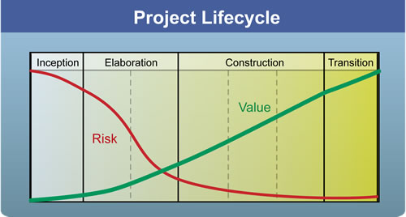

| 概念：项目生命周期 |
 |
|
概述尽管项目的最终目的都是生产产品，但项目中团队的具体目标仍有显著的不同。在开始时，产品需求覆盖了相当大的维度，可能并不清楚项目是否可行或者能有所收益。此时，关键在于对这些问题给出一个答案以及认真的开始开发产品。在项目的后期，产品自身通常已经完整的，质量问题、交付以及完整性将占据舞台中心。在不同的时间点，任务以新的方式开始被接手，而工作产品也将有新的内容。 通过对协调团队工作方式的基本观察，项目生命周期应被划分为一系列的阶段。每个阶段包括已定义的目标、特定的迭代风格、以及某当前时段因项目独特的需要而定制化的任务（Task）和工作产品（Work Product）。项目生命周期为利益相关人提供了监督、透明和控制机制，从而控制项目的资金、范围、风险、价值以及该过程的其他方面。 OpenUP将迭代组织为阶段。每个阶段完成后到达一个里程碑，该里程碑的目标是提出并回答一系列对于利益相关人来说通常至关重要的问题：
如果在阶段评估中，对以上问题的回答是“是”，那么项目就继续。如果回答是否定的，那么该阶段就被推迟（通常添加一个额外的迭代），直到获得一个满意的答复，或者利益相关决定取消该项目。 在每个阶段中，可能有一个或多个迭代，这些迭代产生对上述需要回答的问题的结果。例如，为了回答细化阶段（Elaboration）的问题，需要实现或测试系统的关键方面，从而我们可以理解我们需要什么样的架构，需要什么样的现存的商业化组件（COTS），我们面对什么样的关键风险以及如何处理，团队的效率，等等。这些需要决定了在细化阶段我们需要完成事宜的优先级。 项目生命周期的目标之一就是关注两个关键的利益相关人驱动：风险降低（risk reduction）和价值创造（value creation）。如图1所示，OpenUP阶段使团队关注风险降低减少相关问题，同时跟踪价值创造。  图1 - 项目生命周期中的风险降低（红色曲线）和价值创造（绿色曲线） 风险是指项目中发生的预期之外的可能的事情，以及价值创造道路上的风险。风险与估算的不确定性成正比。通常利益相关人希望知道在规定的时间内项目可以获得多少价值。在多数情况下，你通过实现和测试最关键的功能来降低风险同时创造价值。然而，某些情况下风险的减少和直接的价值创造彼此矛盾，需要小心平衡它们的优先级以最大化利益相关的价值。 参见： 权衡竞争优先权以最大化利益相关人价值. |
This program and the accompanying materials are made available under the |